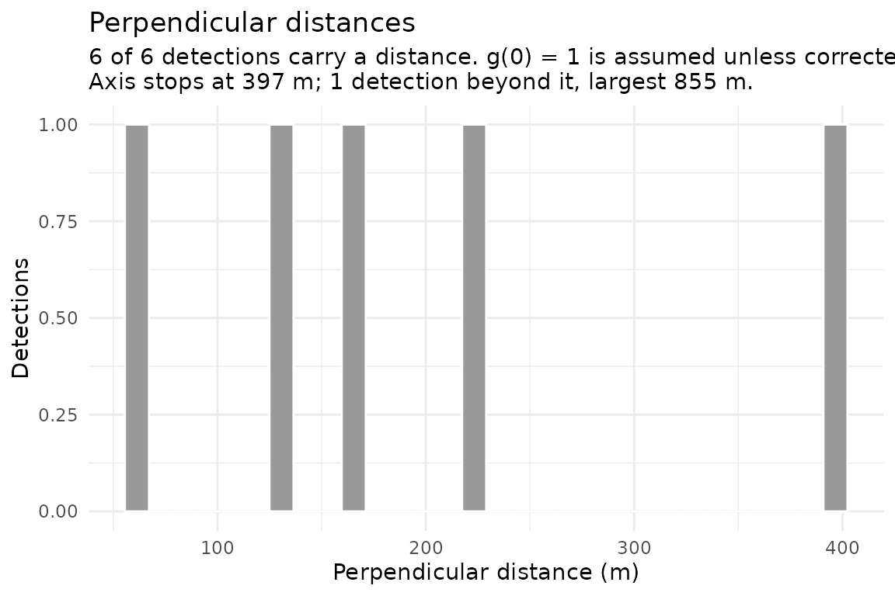

From segments to a density surface
Source:vignettes/from-segments-to-density.Rmd
from-segments-to-density.Rmddistsamp stops at segments. This vignette picks up where
vignette("segmenting-narwc-data") ends and shows how to
hand its output to Distance and dsm, because
the handoff is where the units and the segment-to-detection keying are
easy to get wrong.
The Distance and dsm chunks below are
not evaluated — neither package is a dependency of
distsamp, so this vignette builds without them. The code is
real and runnable once you install them.
The data is mock. narwc-example.csv is
a synthetic survey generated by data-raw/make-fixture.R; no
real NARWC records are distributed with this package or were used to
develop it. It has two days, seven tracks, and a handful of sightings —
nowhere near enough to fit a detection function or a density surface to.
Every number below illustrates the plumbing, and none of it is a
result.
What you start with
path <- system.file("extdata", "narwc-example.csv", package = "distsamp")
dat <- read_narwc(path)
#> `read_narwc()` renamed 2 columns:
#> LAT_DD -> LATITUDE
#> LONG_DD -> LONGITUDE
#> All matched an exact entry in the alias table; `narwc_column_mapping()` returns this, and `quiet = TRUE` silences it.
segs <- segment_survey(dat, seg_length = 5, seed = 1, species = "RIWH")
segs
#> <distsamp_segments>
#> segments: 20
#> tracks: 7
#> total effort: 92.23 km
#> segment length: median 4.44 km, range 2.22-7.78 km
#> target length: 5 km seed: 1
#> species: RIWH
#> detections: 6 (6 with a perpendicular distance, m)Two tables matter here.
segments — the sampling units. One row
each, with effort and a location:
head(segs$segments[, c("seg_id", "seg_eff", "mid_lat", "mid_lon", "wt_beaufort")])
#> # A tibble: 6 × 5
#> seg_id seg_eff mid_lat mid_lon wt_beaufort
#> <chr> <dbl> <dbl> <dbl> <dbl>
#> 1 2024-04-01_2_1 7.78 43.0 -69 2
#> 2 2024-04-01_2_2 5.56 43.1 -69 2
#> 3 2024-04-01_2_3 3.33 43.1 -69 2
#> 4 2024-04-01_2_4 5.56 43.2 -69 2
#> 5 2024-04-01_4_1 4.44 43.3 -69.1 2
#> 6 2024-04-01_4_2 3.33 43.3 -69.1 2detections — one row per sighting, with
perpendicular distance:
segs$detections[, c("seg_id", "SPECCODE", "size", "distance", "side")]
#> # A tibble: 6 × 5
#> seg_id SPECCODE size distance side
#> <chr> <chr> <dbl> <dbl> <chr>
#> 1 2024-04-01_2_1 RIWH 1 229 right
#> 2 2024-04-01_2_2 RIWH 2 132. left
#> 3 2024-04-01_2_2 RIWH 1 397. right
#> 4 2024-04-01_4_2 RIWH 4 61.4 left
#> 5 2024-04-01_4_2 RIWH 1 855. right
#> 6 2024-04-02_1_3 RIWH 4 160. leftseg_id is the key between them. Every detection belongs
to exactly one segment, and every segment carries the effort that
detection was made on.
The units trap
This is the single most common way to get a density estimate wrong by three orders of magnitude, so it is worth being explicit.
c(effort = "km", distance = segs$settings$distance_units)
#> effort distance
#> "km" "m"seg_eff is in kilometres, because that
is what effort accumulation produces. distance defaults to
metres, because ALT is in metres (handbook
8.A.1) and perpendicular distances for aerial cetacean surveys are
conventionally reported that way.
You have two options. Either work in kilometres throughout:
segs_km <- segment_survey(dat, seg_length = 5, seed = 1, species = "RIWH",
distance_units = "km")
segs_km$detections$distance
#> [1] 0.22900000 0.13221321 0.39663963 0.06136037 0.85463963 0.16034753or keep metres and tell Distance about it via
convert_units. For effort in km, distance in m, and area in
km², that conversion factor is:
# (m -> km) * 2 sides * (km effort)
convert_units <- 0.001Whichever you pick, state it in your methods.
Look at the distances first
Before fitting anything, look at the distribution you are about to fit a curve to.
plot(segs, what = "distances")
You are looking for a shoulder near zero and a tail that falls away. What you find changes what you fit:
-
A dip in the first bin may not be a sampling
artefact. An aircraft cannot see the water directly beneath it — for the
Skymaster, handbook 8.A.31 says CETAP-era distances “are actually
measured from about 1/8 mile to either side of the survey line”. That
argues for
ds(left = ...), not for assuming the animals were not there. -
A peak away from zero is what the gamma key
function describes. It is not available in
Distance::ds(), which offershn,hr, andunifonly; it lives inmrds::ddf(key = "gamma"). Note that a gamma key and a left truncation model the same phenomenon, so using both counts the blind spot twice. - A long flat tail is the case for truncating harder.
-
A distance the aircraft could not possibly have
seen is not a wide detection, it is a broken one — a sighting
matched to the wrong segment, or a coordinate with a lost sign. The axis
stops at the 99th percentile so one such value cannot push every real
distance into the first bin, and the subtitle reports how many lie
beyond and how large the largest is. If it says the largest is too far
to be a detection, fix that before fitting anything:
?sighting_distancessays where distances come from and which source produced it.
None of this tells you anything about g(0). Animals that
were submerged when the aircraft passed leave no trace in this plot, and
a perfectly smooth curve is equally consistent with half of them having
been invisible.
Fitting a detection function
Distance::ds() wants a data frame with a
distance column, optionally with size and
detection covariates. segs$detections is already that
shape.
detection_data() assembles that table for you:
flat <- detection_data(
segs,
area = 5811, # square km - yours to supply
covariates = "wt_beaufort"
)
#> `detection_data()`: 20 segments, 6 detections (m).
#> g(0) = 1 is assumed; see `?detection_data`.
head(flat)
#> # A tibble: 6 × 11
#> Region.Label Area Sample.Label Effort object distance distbegin distend size
#> <chr> <dbl> <chr> <dbl> <int> <dbl> <dbl> <dbl> <dbl>
#> 1 all 5811 2024-04-01_… 7.78 1 229 NA NA 1
#> 2 all 5811 2024-04-01_… 5.56 2 132. NA NA 2
#> 3 all 5811 2024-04-01_… 5.56 3 397. NA NA 1
#> 4 all 5811 2024-04-01_… 3.33 NA NA NA NA NA
#> 5 all 5811 2024-04-01_… 5.56 NA NA NA NA NA
#> 6 all 5811 2024-04-01_… 4.44 NA NA NA NA NA
#> # ℹ 2 more variables: distance_source <chr>, wt_beaufort <dbl>
library(Distance)
df <- ds(flat, key = "hn", truncation = "10%", formula = ~ wt_beaufort)
summary(df)
plot(df)
gof_ds(df)Four things worth pausing on.
area is required and has no default. It
scales abundance directly. The scripts this package was rewritten from
had 5,811 km² written into the middle of a function, which is exactly
how a study-area figure outlives the study it belonged to.
Segments with no detections are in the table, carrying a
missing distance.
That is not padding. It is how a flatfile records effort that produced no sightings, and dropping those rows would remove the denominator and inflate density.
Use wt_beaufort, not
mean_beaufort. The weighted version weights each
record by the distance it covers, so a sea state held over 3 km counts
for more than one recorded over 200 m. That is the quantity detection
actually depends on.
Circling detections are excluded by default, and the
exclusion is reported rather than silent. A position logged off the
track is not measured at the moment of detection. They still count
towards the segment’s abundance, so this does not touch
segs$sightings — excluding a detection from the detection
function while counting the animal towards density is a normal
combination, and the two are separate arguments:
nrow(detection_data(segs, area = 5811, include_circling = TRUE))
#> `detection_data()`: 20 segments, 6 detections (m).
#> g(0) = 1 is assumed; see `?detection_data`.
#> [1] 22Check which source each distance came from. A methods section has to state this, and point and interval distances cannot be fitted together:
table(flat$distance_source, useNA = "no")
#>
#> angle
#> 6Truncation discards the tail, but not the effort.
detection_data() takes a truncation argument
that drops detections beyond it and leaves their segments in place with
effort intact — effort searched is effort searched whether or not
anything was seen within the truncation distance. Pass the same value to
ds(), or you will fit the model to one set of detections
and scale abundance by another.
nrow(detection_data(segs, area = 5811, truncation = 500))
#> `detection_data()`: 20 segments, 5 detections (m).
#> dropped 1 beyond the truncation distance; their segments keep their effort
#> g(0) = 1 is assumed; see `?detection_data`.
#> [1] 21Comparing several models
Fitting a set and picking the best is standard, and there are two traps in it.
AIC only compares models fitted to the same data. Changing the truncation changes which detections are in the likelihood, so AICs either side of that are not comparable. Vary key function, adjustments, and covariates within a fixed truncation; treat truncation as a separate comparison altogether.
Binned and unbinned fits cannot share a table
either. STRIP-derived distances are intervals and
are fitted binned; angle- and position-derived distances are points. A
multi-year model set splits along that line whether you want it to or
not.
And rank on more than AIC. What propagates into abundance is the effective strip half-width, and two models within 2 AIC of each other can give materially different values of it — so read and its CV alongside the AIC, with a goodness-of-fit statistic.
The package repository’s docs/07-fitting-architecture.md
works through this, along with where an automated model-selection sweep
should live and what can and cannot be done about g(0).
Building the dsm inputs
dsm wants two data frames with specific column names.
The mapping from distsamp output is mechanical:
library(dsm)
segment.data <- data.frame(
Sample.Label = segs$segments$seg_id,
Effort = segs$segments$seg_eff, # km
X = segs$segments$mid_lon, # project these first, see below
Y = segs$segments$mid_lat,
beaufort = segs$segments$wt_beaufort
)
observation.data <- data.frame(
object = seq_len(nrow(df_data)),
Sample.Label = df_data$seg_id,
size = df_data$size,
distance = df_data$distance
)object is just a detection identifier; dsm
uses it to link a detection to its row in the fitted detection function,
so it must match the row order of the data you passed to
ds().
Project the coordinates first
mid_lon/mid_lat are decimal degrees.
Fitting a smooth of longitude and latitude in degrees distorts distances
badly at the latitudes NARWC surveys cover — a degree of longitude is
about 81 km at 43°N against 111 km for a degree of latitude. Project to
something equal-area before modelling:
pts <- segments_as_sf(segs, "midpoints")
# Albers equal-area, Gulf of Maine
gom_aea <- paste(
"+proj=aea +lat_1=40 +lat_2=46 +lat_0=43 +lon_0=-69",
"+x_0=0 +y_0=0 +datum=WGS84 +units=km +no_defs"
)
projected <- sf::st_transform(pts, gom_aea)
xy <- sf::st_coordinates(projected)
head(xy)
#> X Y
#> [1,] 0.000000 3.893573
#> [2,] 0.000000 10.568327
#> [3,] 0.000000 15.018201
#> [4,] 0.000000 19.468104
#> [5,] -8.107262 30.041539
#> [6,] -8.102634 33.935268Then use those X/Y in
segment.data.
Fitting the model
mod <- dsm(
count ~ s(X, Y, bs = "ts") + s(depth, bs = "ts"),
ddf.obj = df,
segment.data = segment.data,
observation.data = observation.data,
family = tw(), # Tweedie handles the zero inflation
method = "REML"
)
summary(mod)
plot(mod)
gam.check(mod)A Tweedie or negative binomial family is usually right: most segments hold zero animals, and the non-zero ones are overdispersed. Miller et al. (2013) discuss the choice.
Covariates are your job
distsamp gives you a location per segment and nothing
else. Environmental covariates — depth, sea surface temperature, fronts
— have to be sampled at each segment midpoint yourself.
segments_as_sf(segs, "midpoints") is the intended
handoff:
pts <- segments_as_sf(segs, "midpoints")
# e.g. with terra
depth <- terra::extract(bathymetry_raster, terra::vect(pts))
segment.data$depth <- depth[, 2]Two cautions.
Sample at the midpoint, which is what Becker et
al. (2019) do — covariates “derived based on the segment’s geographical
mid-point”, with SST and depth standard deviations taken over a 3 ×
3-pixel box around it. segment_midpoints() places that
point half the segment’s effort along the track rather than at
the centroid of its records, so it is on the trackline by
construction.
And match covariates in time as well as space. A
segment flown in April needs April’s SST, not the annual mean.
segs$segments$DATE carries the survey date for exactly
this.
Reporting
Record the seed. Without it the segmentation is not
reproducible, and neither is anything downstream of it.
str(segs$settings)
#> List of 11
#> $ seg_length : num 5
#> $ species : chr "RIWH"
#> $ seed : num 1
#> $ seg_tol_frac : num 0.5
#> $ min_track_km : num 1
#> $ min_segment_km : num 1
#> $ dist_method : chr "haversine"
#> $ circling : chr "same_species"
#> $ circling_distance: chr "with_group"
#> $ distance_units : chr "m"
#> $ distance_sources : chr [1:3] "angle" "exact" "strip"Suggested methods wording is in docs/06-references.md in
the package repository.
References
Becker, E.A., Forney, K.A., Ferguson, M.C., Foley, D.G., Smith, R.C., Barlow, J. and Redfern, J.V. (2010) Comparing California Current cetacean-habitat models developed using in situ and remotely sensed sea surface temperature data. Marine Ecology Progress Series 413:163-183. https://doi.org/10.3354/meps08696
Becker, E.A., Forney, K.A., Redfern, J.V., Barlow, J., Jacox, M.G., Roberts, J.J. and Palacios, D.M. (2019) Predicting cetacean abundance and distribution in a changing climate. Diversity and Distributions 25:626-643. https://doi.org/10.1111/ddi.12867
Hedley, S.L. and Buckland, S.T. (2004) Spatial models for line transect sampling. Journal of Agricultural, Biological, and Environmental Statistics 9:181-199. https://doi.org/10.1198/1085711043578
Miller, D.L., Burt, M.L., Rexstad, E.A. and Thomas, L. (2013) Spatial models for distance sampling data: recent developments and future directions. Methods in Ecology and Evolution 4:1001-1010. https://doi.org/10.1111/2041-210X.12105
Miller, D.L., Rexstad, E., Thomas, L., Marshall, L. and Laake, J.L. (2019) Distance sampling in R. Journal of Statistical Software 89(1):1-28. https://doi.org/10.18637/jss.v089.i01